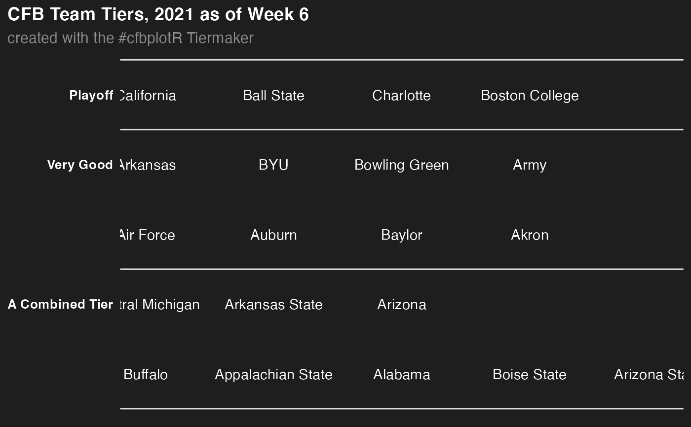

This function sets up a ggplot to visualize CFB team tiers.
nfl_team_tiers( data, title = "CFB Team Tiers, 2021 as of Week 6", subtitle = "created with the #cfbplotR Tiermaker", caption = NULL, tier_desc = c(`1` = "Playoff", `2` = "Very Good", `3` = "Medium", `4` = "Bad", `5` = "What are they doing?", `6` = "", `7` = ""), presort = FALSE, alpha = 0.8, width = 0.075, no_line_below_tier = NULL, devel = FALSE )
| data | A data frame that has to include the variables |
|---|---|
| title | The title of the plot. If |
| subtitle | The subtitle of the plot. If |
| caption | The caption of the plot. If |
| tier_desc | A named vector consisting of the tier descriptions. The names
must equal the tier numbers from |
| presort | If |
| alpha | The alpha channel of the logos, i.e. transparency level, as a numerical value between 0 and 1. |
| width | The desired width of the logo in |
| no_line_below_tier | Vector of tier numbers. The function won't draw tier separation lines below these tiers. This is intended to be used for tiers that shall be combined (see examples). |
| devel | Determines if logos shall be rendered. If |
# \donttest{ library(ggplot2) library(dplyr, warn.conflicts = FALSE) team_names <- valid_team_names("FBS") # remove conference logos from this example team_names <- team_names[1:20] # Build the team tiers data frame # This is completely random! df <- data.frame( tier_no = sample(1:5, length(team_names), replace = TRUE), team = team_names ) %>% dplyr::group_by(tier_no) %>% dplyr::mutate(tier_rank = sample(1:n(), n())) # Plot team tiers cfb_team_tiers(df)#> Error in cfb_team_tiers(df): could not find function "cfb_team_tiers"# Create a combined tier which is useful for tiers with lots of teams that # should be split up in two or more rows. This is done by setting an empty # string for the tier 5 description and removing the tier separation line # below tier number 4. # This example also shows how to turn off the subtitle and add a caption cfb_team_tiers(df, subtitle = NULL, caption = "This is the caption", tier_desc = c("1" = "Playoff", "2" = "Very Good", "3" = "Medium", "4" = "A Combined Tier", "5" = ""), no_line_below_tier = 4)#> Error in cfb_team_tiers(df, subtitle = NULL, caption = "This is the caption", tier_desc = c(`1` = "Playoff", `2` = "Very Good", `3` = "Medium", `4` = "A Combined Tier", `5` = ""), no_line_below_tier = 4): could not find function "cfb_team_tiers"# For the development of the tiers, it can be useful to turn off logo image # rendering as this can take quite a long time. By setting `devel = TRUE`, the # logo images are replaced by team abbreviations which is much faster nfl_team_tiers(df, tier_desc = c("1" = "Playoff", "2" = "Very Good", "3" = "", "4" = "A Combined Tier", "5" = ""), no_line_below_tier = c(2, 4), devel = TRUE)# }